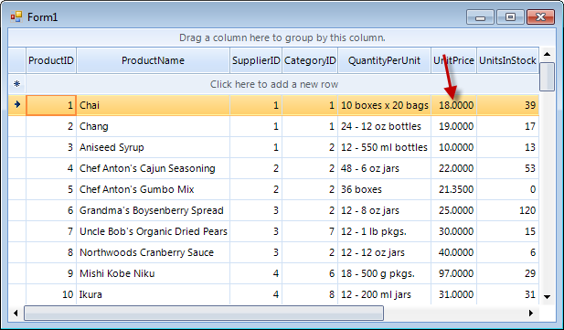
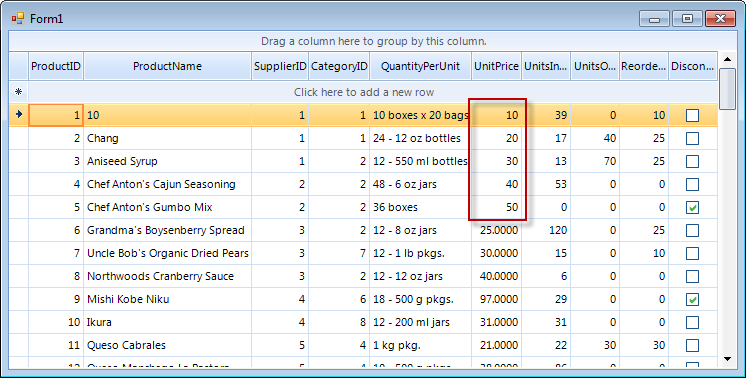

Accessing Cells
Cells can be accessed by index or via the column Name property.
RadGridView uses virtualization for its visual elements. This means that only the rows that are currently
visible have a visual element. When the grid is scrolled up and down the visual elements are reused. Because of the virtualization,
it is safe to use the CellElement only inside the CellFormatting
event and only for the current cell.When assigning values to several cells subsequently, the RadGridView should be placed between BeginUpdate() and
EndUpdate() method invocations of the desired template. See section "Multiple assignments of cell values"
below for more information.
Accessing cells by index
The example below modifies the second cell of the first row and sets a value greater than 10 back to 10.
[C#] Accessing cells by index
if ((decimal)radGridView1.Rows[0].Cells[5].Value > 10)
radGridView1.Rows[0].Cells[5].Value = 10;
[VB.NET] Accessing cells by index
If DirectCast(RadGridView1.Rows(0).Cells(5).Value, Decimal) > 10 Then
RadGridView1.Rows(0).Cells(5).Value = 10
End If
Accessing cells by column Name
In this example we will change a cell value to 10 if it is greater than 10. In this case we assume that
there is a "UnitPrice" column and we modify the cell in its first row.
[C#] Accessing cells by column name
if ((decimal)radGridView1.Rows[0].Cells["UnitPrice"].Value > 10)
radGridView1.Rows[0].Cells["UnitPrice"].Value = 10;
[VB.NET] Accessing cells by column name
If DirectCast(RadGridView1.Rows(0).Cells("UnitPrice").Value, Decimal) > 10 Then
RadGridView1.Rows(0).Cells("UnitPrice").Value = 10
End If
Before
After
Multiple assignments of cell values
When assigning values to several cells subsequently, the RadGridView should be placed between BeginUpdate()
and EndUpdate() method invocations of the desired template. This way of setting multiple assignments
is recommended for performance considerations. For example if you have added a sorting descriptor to RadGridView and you
enter/modify five cell values without using these methods, the sorting mechanism will recreate the whole grid five times,
which will slow it down. On the other hand if this is done between the suggested methods, the sorting mechanism will run
only once, right after calling EndUpdate() method.
[C#] Updating cells
radGridView1.TableElement.BeginUpdate();
radGridView1.Rows[0].Cells["UnitPrice"].Value = 10;
radGridView1.Rows[1].Cells["UnitPrice"].Value = 20;
radGridView1.Rows[2].Cells["UnitPrice"].Value = 30;
radGridView1.Rows[3].Cells["UnitPrice"].Value = 40;
radGridView1.Rows[4].Cells["UnitPrice"].Value = 50;
radGridView1.TableElement.EndUpdate();
[VB.NET] Updating cells
Me.RadGridView1.TableElement.BeginUpdate()
RadGridView1.Rows(0).Cells("UnitPrice").Value = 10
RadGridView1.Rows(1).Cells("UnitPrice").Value = 20
RadGridView1.Rows(2).Cells("UnitPrice").Value = 30
RadGridView1.Rows(3).Cells("UnitPrice").Value = 40
RadGridView1.Rows(4).Cells("UnitPrice").Value = 50
Me.RadGridView1.TableElement.EndUpdate()

To style a cell use Conditional Formatting.